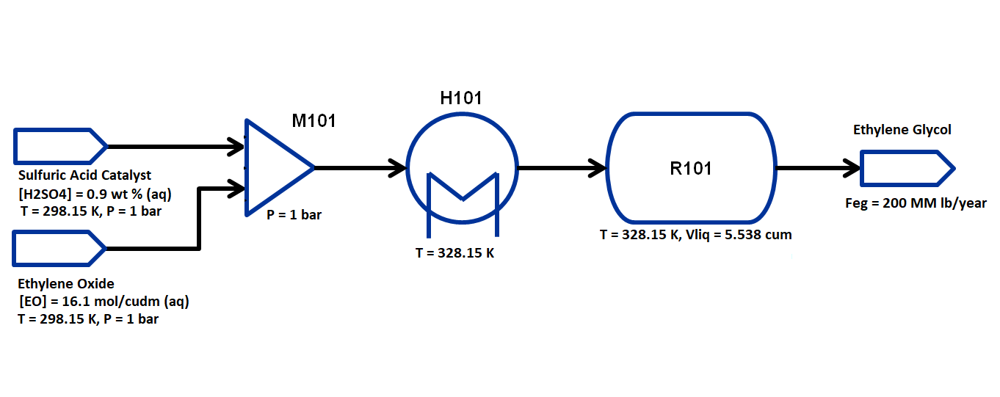

Flowsheet Stoichiometric Reactor Simulation and Optimization of Ethylene Glycol Production¶
Learning Outcomes¶
Call and implement the IDAES StochiometricReactor unit model
Construct a steady-state flowsheet using the IDAES unit model library
Connecting unit models in a flowsheet using Arcs
Fomulate and solve an optimization problem
Defining an objective function
Setting variable bounds
Adding additional constraints
Problem Statement¶
Following the previous example implementing a Continuous Stirred Tank Reactor (CSTR) unit model, we can alter the flowsheet to use a stochiometric (or yield) reactor. As before, this example is adapted from Fogler, H.S., Elements of Chemical Reaction Engineering 5th ed., 2016, Prentice Hall, p. 157-160 with the following chemical reaction, property packages and flowsheet. Unlike the previous two reactors which apply performance equations to calculate reaction extent, this simplified reactor model neglects all geometric properties and allows the user to specify a yield per reaction. The state variables chosen for the property package are molar flows of each component by phase in each stream, temperature of each stream and pressure of each stream. The components considered are: ethylene oxide, water, sulfuric acid and ethylene glycol and the process occurs in liquid phase only. Therefore, every stream has 4 flow variables, 1 temperature and 1 pressure variable.
Chemical reaction:
C2H4O + H2O + H2SO4 → C2H6O2 + H2SO4
Property Packages:
egprod_ideal.py
egprod_reaction.py
Flowsheet:
Importing Required Pyomo and IDAES components¶
To construct a flowsheet, we will need several components from the Pyomo and IDAES packages. Let us first import the following components from Pyomo: - Constraint (to write constraints) - Var (to declare variables) - ConcreteModel (to create the concrete model object) - Expression (to evaluate values as a function of variables defined in the model) - Objective (to define an objective function for optimization) - TransformationFactory (to apply certain transformations) - Arc (to connect two unit models)
For further details on these components, please refer to the pyomo documentation: https://pyomo.readthedocs.io/en/latest/
From idaes, we will be needing the FlowsheetBlock and the following
unit models: - Mixer - Heater - StoichiometricReactor
We will also be needing some utility tools to put together the flowsheet and calculate the degrees of freedom, tools for model expressions and calling variable values, and built-in functions to define property packages, add unit containers to objects and define our initialization scheme.
from pyomo.environ import (Constraint,
Var,
ConcreteModel,
Expression,
Objective,
TransformationFactory,
value,
units as pyunits)
from pyomo.network import Arc
from idaes.core import FlowsheetBlock
from idaes.models.properties.modular_properties.base.generic_property import (
GenericParameterBlock)
from idaes.models.properties.modular_properties.base.generic_reaction import (
GenericReactionParameterBlock)
from idaes.models.unit_models import (Feed,
Mixer,
Heater,
StoichiometricReactor,
Product)
from idaes.core.solvers import get_solver
from idaes.core.util.model_statistics import degrees_of_freedom
from idaes.core.util.initialization import propagate_state
Importing Required Thermophysical and Reaction Packages¶
The final step is to import the thermophysical and reaction packages. We have created a custom thermophysical package that support ideal vapor and liquid behavior for this system, and in this case we will restrict it to ideal liquid behavior only.
Let us import the following modules from the same directory as this Jupyter notebook: - egprod_ideal as thermo_props - egprod_reaction as reaction_props
import egprod_ideal as thermo_props
import egprod_reaction as reaction_props
Constructing the Flowsheet¶
We have now imported all the components, unit models, and property modules we need to construct a flowsheet. Let us create a ConcreteModel and add the flowsheet block.
m = ConcreteModel()
m.fs = FlowsheetBlock(dynamic=False)
We now need to add the property packages to the flowsheet. Unlike the basic Flash unit model example, where we only had a thermophysical property package, for this flowsheet we will also need to add a reaction property package. We will use the Modular Property Framework and Modular Reaction Framework. The get_prop method for the natural gas property module automatically returns the correct dictionary using a component list argument. The GenericParameterBlock and GenericReactionParameterBlock methods build states blocks from passed parameter data; the reaction block unpacks using **reaction_props.config_dict to allow for optional or empty keyword arguments:
m.fs.thermo_params = GenericParameterBlock(**thermo_props.config_dict)
m.fs.reaction_params = GenericReactionParameterBlock(property_package=m.fs.thermo_params,
**reaction_props.config_dict)
Adding Unit Models¶
Let us start adding the unit models we have imported to the flowsheet.
Here, we are adding a Mixer, a Heater and a
StoichiometricReactor. Note that all unit models need to be given a
property package argument. In addition to that, there are several
arguments depending on the unit model, please refer to the documentation
for more details on IDAES Unit
Models.
For example, the Mixer is given a list consisting of names to
the two inlets.
m.fs.OXIDE = Feed(property_package=m.fs.thermo_params)
m.fs.ACID = Feed(property_package=m.fs.thermo_params)
m.fs.PROD = Product(property_package=m.fs.thermo_params)
m.fs.M101 = Mixer(property_package=m.fs.thermo_params,
inlet_list=["reagent_feed", "catalyst_feed"])
m.fs.H101 = Heater(property_package=m.fs.thermo_params,
has_pressure_change=False,
has_phase_equilibrium=False)
m.fs.R101 = StoichiometricReactor(property_package=m.fs.thermo_params,
reaction_package=m.fs.reaction_params,
has_heat_of_reaction=True,
has_heat_transfer=True,
has_pressure_change=False)
Connecting Unit Models Using Arcs¶
We have now added all the unit models we need to the flowsheet. However,
we have not yet specifed how the units are to be connected. To do this,
we will be using the Arc which is a pyomo component that takes in
two arguments: source and destination. Let us connect the outlet
of the Mixer to the inlet of the Heater, and the outlet of the
Heater to the inlet of the StoichiometricReactor. Additionally,
we will connect the Feed and Product blocks to the flowsheet:
m.fs.s01 = Arc(source=m.fs.OXIDE.outlet, destination=m.fs.M101.reagent_feed)
m.fs.s02 = Arc(source=m.fs.ACID.outlet, destination=m.fs.M101.catalyst_feed)
m.fs.s03 = Arc(source=m.fs.M101.outlet, destination=m.fs.H101.inlet)
m.fs.s04 = Arc(source=m.fs.H101.outlet, destination=m.fs.R101.inlet)
m.fs.s05 = Arc(source=m.fs.R101.outlet, destination=m.fs.PROD.inlet)
We have now connected the unit model block using the arcs. However, we
also need to link the state variables on connected ports. Pyomo provides
a convenient method TransformationFactory to write these equality
constraints for us between two ports:
TransformationFactory("network.expand_arcs").apply_to(m)
Adding Expressions to Compute Operating Costs¶
In this section, we will add a few Expressions that allows us to
evaluate the performance. Expressions provide a convenient way of
calculating certain values that are a function of the variables defined
in the model. For more details on Expressions, please refer to the
Pyomo Expression
documentaiton.
For this flowsheet, we are interested in computing ethylene glycol production in millions of pounds per year, as well as the total costs due to cooling and heating utilities.
Let us first add an Expression to convert the product flow from
mol/s to MM lb/year of ethylene glycol. We see that the molecular weight
exists in the thermophysical property package, so we may use that value
for our calculations.
m.fs.eg_prod = Expression(expr=pyunits.convert(m.fs.PROD.inlet.flow_mol_phase_comp[0, "Liq", "ethylene_glycol"]
*m.fs.thermo_params.ethylene_glycol.mw, # MW defined in properties as kg/mol
to_units=pyunits.Mlb/pyunits.yr)) # converting kg/s to MM lb/year
Now, let us add expressions to compute the reactor cooling cost (\\(/s) assuming a cost of 2.12E-5 \\\)/kW, and the heating utility cost (\\(/s) assuming 2.2E-4 \\\)/kW. Note that the heat duty is in units of watt (J/s). The total operating cost will be the sum of the two, expressed in \$/year assuming 8000 operating hours per year (~10% downtime, which is fairly common for small scale chemical plants):
m.fs.cooling_cost = Expression(expr=2.12e-8 * (-m.fs.R101.heat_duty[0])) # the reaction is exothermic, so R101 duty is negative
m.fs.heating_cost = Expression(expr=2.2e-7 * m.fs.H101.heat_duty[0]) # the stream must be heated to T_rxn, so H101 duty is positive
m.fs.operating_cost = Expression(expr=(3600 * 8000 *(m.fs.heating_cost + m.fs.cooling_cost)))
Fixing Feed Conditions¶
Let us first check how many degrees of freedom exist for this flowsheet
using the degrees_of_freedom tool we imported earlier. We expect
each stream to have 6 degrees of freedom, the mixer to have 0 (after
both streams are accounted for), the heater to have 1 (just the duty,
since the inlet is also the outlet of M101), and the reactor to have 1
(duty or overall conversion, since the inlet is also the outlet of
H101). In this case, the reactor has an extra degree of freedom since we
have not yet defined the yield of the sole rate-kinetics reaction.
Therefore, we have 15 degrees of freedom to specify: temperature,
pressure and flow of all four components on both streams; outlet heater
temperature; reactor conversion and duty.
print(degrees_of_freedom(m))
15
We will now be fixing the feed stream to the conditions shown in the
flowsheet above. As mentioned in other tutorials, the IDAES framework
expects a time index value for every referenced internal stream or unit
variable, even in steady-state systems with a single time point $ t = 0
$ (t = [0] is the default when creating a FlowsheetBlock without
passing a time_set argument). The non-present components in each
stream are assigned a very small non-zero value to help with convergence
and initializing. Based on stoichiometric ratios for the reaction, 80%
conversion and 200 MM lb/year (46.4 mol/s) of ethylene glycol, we will
initialize our simulation with the following calculated values:
m.fs.OXIDE.outlet.flow_mol_phase_comp[0, "Liq", "ethylene_oxide"].fix(58.0*pyunits.mol/pyunits.s)
m.fs.OXIDE.outlet.flow_mol_phase_comp[0, "Liq", "water"].fix(39.6*pyunits.mol/pyunits.s) # calculated from 16.1 mol EO / cudm in stream
m.fs.OXIDE.outlet.flow_mol_phase_comp[0, "Liq", "sulfuric_acid"].fix(1e-5*pyunits.mol/pyunits.s)
m.fs.OXIDE.outlet.flow_mol_phase_comp[0, "Liq", "ethylene_glycol"].fix(1e-5*pyunits.mol/pyunits.s)
m.fs.OXIDE.outlet.temperature.fix(298.15*pyunits.K)
m.fs.OXIDE.outlet.pressure.fix(1e5*pyunits.Pa)
m.fs.ACID.outlet.flow_mol_phase_comp[0, "Liq", "ethylene_oxide"].fix(1e-5*pyunits.mol/pyunits.s)
m.fs.ACID.outlet.flow_mol_phase_comp[0, "Liq", "water"].fix(200*pyunits.mol/pyunits.s)
m.fs.ACID.outlet.flow_mol_phase_comp[0, "Liq", "sulfuric_acid"].fix(0.334*pyunits.mol/pyunits.s) # calculated from 0.9 wt% SA in stream
m.fs.ACID.outlet.flow_mol_phase_comp[0, "Liq", "ethylene_glycol"].fix(1e-5*pyunits.mol/pyunits.s)
m.fs.ACID.outlet.temperature.fix(298.15*pyunits.K)
m.fs.ACID.outlet.pressure.fix(1e5*pyunits.Pa)
Fixing Unit Model Specifications¶
Now that we have fixed our inlet feed conditions, we will now be fixing the operating conditions for the unit models in the flowsheet. Let us fix the outlet temperature of H101 to 328.15 K.
m.fs.H101.outlet.temperature.fix(328.15*pyunits.K)
We will need to specify both initial reactant extent (conversion or yield) and heat duty values (these are the only two free variables to choose from). The reaction extent can be specified directly, as a molar or mass yield ratio of product to a particular reactant, or fractional conversion of a particular reactant. Here, we choose fractional conversion in terms of ethylene oxide. Since heat duty and the outlet reactor temperature are interdependent, we can choose to specify this quantity instead. While the reaction kinetic parameters exist in the property package, we also do not need to add a rate constant expression since generation is explicitly defined through the conversion/yield. Note that our initial problem will solve with zero temperature change but will be infeasible with zero heat duty; this is due to the heat of reaction enforced by allowing heat transfer and mandating a non-zero conversion.
m.fs.R101.conversion = Var(initialize=0.80, bounds=(0, 1), units=pyunits.dimensionless) # fraction
m.fs.R101.conv_constraint = Constraint(
expr=m.fs.R101.conversion*m.fs.R101.inlet.
flow_mol_phase_comp[0, "Liq", "ethylene_oxide"] ==
(m.fs.R101.inlet.flow_mol_phase_comp[0, "Liq", "ethylene_oxide"] -
m.fs.R101.outlet.flow_mol_phase_comp[0, "Liq", "ethylene_oxide"]))
m.fs.R101.conversion.fix(0.80)
m.fs.R101.outlet.temperature.fix(328.15*pyunits.K) # equal inlet reactor temperature
For initialization, we solve a square problem (degrees of freedom = 0). Let’s check the degrees of freedom below:
print(degrees_of_freedom(m))
0
Finally, we need to initialize the each unit operation in sequence to solve the flowsheet. As in best practice, unit operations are initialized or solved, and outlet properties are propagated to connected inlet streams via arc definitions as follows:
# Initialize and solve each unit operation
m.fs.OXIDE.initialize()
propagate_state(arc=m.fs.s01)
m.fs.ACID.initialize()
propagate_state(arc=m.fs.s01)
m.fs.M101.initialize()
propagate_state(arc=m.fs.s03)
m.fs.H101.initialize()
propagate_state(arc=m.fs.s04)
m.fs.R101.initialize()
propagate_state(arc=m.fs.s05)
m.fs.PROD.initialize()
# set solver
solver = get_solver()
2023-03-04 00:54:29 [INFO] idaes.init.fs.OXIDE.properties: Starting initialization
2023-03-04 00:54:29 [INFO] idaes.init.fs.OXIDE.properties: Property initialization: optimal - Optimal Solution Found.
2023-03-04 00:54:29 [INFO] idaes.init.fs.OXIDE.properties: Property package initialization: optimal - Optimal Solution Found.
2023-03-04 00:54:29 [INFO] idaes.init.fs.OXIDE: Initialization Complete.
2023-03-04 00:54:29 [INFO] idaes.init.fs.ACID.properties: Starting initialization
2023-03-04 00:54:29 [INFO] idaes.init.fs.ACID.properties: Property initialization: optimal - Optimal Solution Found.
2023-03-04 00:54:29 [INFO] idaes.init.fs.ACID.properties: Property package initialization: optimal - Optimal Solution Found.
2023-03-04 00:54:29 [INFO] idaes.init.fs.ACID: Initialization Complete.
2023-03-04 00:54:29 [INFO] idaes.init.fs.M101.reagent_feed_state: Starting initialization
2023-03-04 00:54:29 [INFO] idaes.init.fs.M101.reagent_feed_state: Property initialization: optimal - Optimal Solution Found.
2023-03-04 00:54:29 [INFO] idaes.init.fs.M101.catalyst_feed_state: Starting initialization
2023-03-04 00:54:29 [INFO] idaes.init.fs.M101.catalyst_feed_state: Property initialization: optimal - Optimal Solution Found.
2023-03-04 00:54:29 [INFO] idaes.init.fs.M101.mixed_state: Starting initialization
2023-03-04 00:54:29 [INFO] idaes.init.fs.M101.mixed_state: Property initialization: optimal - Optimal Solution Found.
2023-03-04 00:54:29 [INFO] idaes.init.fs.M101.mixed_state: Property package initialization: optimal - Optimal Solution Found.
2023-03-04 00:54:29 [INFO] idaes.init.fs.M101: Initialization Complete: optimal - Optimal Solution Found
2023-03-04 00:54:29 [INFO] idaes.init.fs.H101.control_volume.properties_in: Starting initialization
2023-03-04 00:54:29 [INFO] idaes.init.fs.H101.control_volume.properties_in: Property initialization: optimal - Optimal Solution Found.
2023-03-04 00:54:29 [INFO] idaes.init.fs.H101.control_volume.properties_out: Starting initialization
2023-03-04 00:54:29 [INFO] idaes.init.fs.H101.control_volume.properties_out: Property initialization: optimal - Optimal Solution Found.
2023-03-04 00:54:29 [INFO] idaes.init.fs.H101.control_volume: Initialization Complete
2023-03-04 00:54:29 [INFO] idaes.init.fs.H101: Initialization Complete: optimal - Optimal Solution Found
2023-03-04 00:54:29 [INFO] idaes.init.fs.R101.control_volume.properties_in: Starting initialization
2023-03-04 00:54:29 [INFO] idaes.init.fs.R101.control_volume.properties_in: Property initialization: optimal - Optimal Solution Found.
2023-03-04 00:54:29 [INFO] idaes.init.fs.R101.control_volume.properties_out: Starting initialization
2023-03-04 00:54:30 [INFO] idaes.init.fs.R101.control_volume.properties_out: Property initialization: optimal - Optimal Solution Found.
2023-03-04 00:54:30 [INFO] idaes.init.fs.R101.control_volume.reactions: Initialization Complete.
2023-03-04 00:54:30 [INFO] idaes.init.fs.R101.control_volume: Initialization Complete
2023-03-04 00:54:30 [INFO] idaes.init.fs.R101: Initialization Complete: optimal - Optimal Solution Found
2023-03-04 00:54:30 [INFO] idaes.init.fs.PROD.properties: Starting initialization
2023-03-04 00:54:30 [INFO] idaes.init.fs.PROD.properties: Property initialization: optimal - Optimal Solution Found.
2023-03-04 00:54:30 [INFO] idaes.init.fs.PROD.properties: Property package initialization: optimal - Optimal Solution Found.
2023-03-04 00:54:30 [INFO] idaes.init.fs.PROD: Initialization Complete.
# Solve the model
results = solver.solve(m, tee=True)
Ipopt 3.13.2: nlp_scaling_method=gradient-based
tol=1e-06
max_iter=200
**************************************************************************
This program contains Ipopt, a library for large-scale nonlinear optimization.
Ipopt is released as open source code under the Eclipse Public License (EPL).
For more information visit http://projects.coin-or.org/Ipopt
This version of Ipopt was compiled from source code available at
https://github.com/IDAES/Ipopt as part of the Institute for the Design of
Advanced Energy Systems Process Systems Engineering Framework (IDAES PSE
Framework) Copyright (c) 2018-2019. See https://github.com/IDAES/idaes-pse.
This version of Ipopt was compiled using HSL, a collection of Fortran codes
for large-scale scientific computation. All technical papers, sales and
publicity material resulting from use of the HSL codes within IPOPT must
contain the following acknowledgement:
HSL, a collection of Fortran codes for large-scale scientific
computation. See http://www.hsl.rl.ac.uk.
**************************************************************************
This is Ipopt version 3.13.2, running with linear solver ma27.
Number of nonzeros in equality constraint Jacobian...: 337
Number of nonzeros in inequality constraint Jacobian.: 0
Number of nonzeros in Lagrangian Hessian.............: 383
Total number of variables............................: 95
variables with only lower bounds: 0
variables with lower and upper bounds: 86
variables with only upper bounds: 0
Total number of equality constraints.................: 95
Total number of inequality constraints...............: 0
inequality constraints with only lower bounds: 0
inequality constraints with lower and upper bounds: 0
inequality constraints with only upper bounds: 0
iter objective inf_pr inf_du lg(mu) ||d|| lg(rg) alpha_du alpha_pr ls
0 0.0000000e+00 1.30e+06 0.00e+00 -1.0 0.00e+00 - 0.00e+00 0.00e+00 0
1 0.0000000e+00 2.66e+06 1.28e+01 -1.0 9.75e+06 - 6.77e-02 9.90e-01h 1
2 0.0000000e+00 2.36e+04 2.90e+02 -1.0 9.75e+04 - 7.00e-01 9.90e-01h 1
3 0.0000000e+00 2.43e+02 1.44e+01 -1.0 9.74e+02 - 9.90e-01 9.90e-01h 1
4 0.0000000e+00 1.85e+00 3.18e+03 -1.0 9.62e+00 - 9.90e-01 9.92e-01h 1
5 0.0000000e+00 8.94e-08 3.34e+03 -1.0 7.33e-02 - 9.94e-01 1.00e+00h 1
Cannot recompute multipliers for feasibility problem. Error in eq_mult_calculator
Number of Iterations....: 5
(scaled) (unscaled)
Objective...............: 0.0000000000000000e+00 0.0000000000000000e+00
Dual infeasibility......: 1.6686898422600192e+06 1.6686898422600192e+06
Constraint violation....: 1.9895196601282805e-13 8.9406967163085938e-08
Complementarity.........: 0.0000000000000000e+00 0.0000000000000000e+00
Overall NLP error.......: 1.9895196601282805e-13 1.6686898422600192e+06
Number of objective function evaluations = 6
Number of objective gradient evaluations = 6
Number of equality constraint evaluations = 6
Number of inequality constraint evaluations = 0
Number of equality constraint Jacobian evaluations = 6
Number of inequality constraint Jacobian evaluations = 0
Number of Lagrangian Hessian evaluations = 5
Total CPU secs in IPOPT (w/o function evaluations) = 0.002
Total CPU secs in NLP function evaluations = 0.000
EXIT: Optimal Solution Found.
Analyze the Results of the Square Problem¶
What is the total operating cost?
print(f"operating cost = ${value(m.fs.operating_cost)/1e6:0.3f} million per year")
operating cost = $3.458 million per year
For this operating cost, what conversion did we achieve of ethylene oxide to ethylene glycol?
m.fs.R101.report()
print()
print(f"Conversion achieved = {value(m.fs.R101.conversion):.1%}")
====================================================================================
Unit : fs.R101 Time: 0.0
------------------------------------------------------------------------------------
Unit Performance
Variables:
Key : Value : Units : Fixed : Bounds
Heat Duty : -5.6566e+06 : watt : False : (None, None)
Reaction Extent [R1] : 46.400 : mole / second : False : (None, None)
------------------------------------------------------------------------------------
Stream Table
Units Inlet Outlet
Molar Flowrate ('Liq', 'ethylene_oxide') mole / second 58.000 11.600
Molar Flowrate ('Liq', 'water') mole / second 239.60 193.20
Molar Flowrate ('Liq', 'sulfuric_acid') mole / second 0.33401 0.33401
Molar Flowrate ('Liq', 'ethylene_glycol') mole / second 2.0000e-05 46.400
Temperature kelvin 328.15 328.15
Pressure pascal 1.0000e+05 1.0000e+05
====================================================================================
Conversion achieved = 80.0%
Optimizing Ethylene Glycol Production¶
Now that the flowsheet has been squared and solved, we can run a small optimization problem to minimize our production costs. Suppose we require at least 200 million pounds/year of ethylene glycol produced and 90% conversion of ethylene oxide, allowing for variable and reactor temperature (heater outlet).
Let us declare our objective function for this problem.
m.fs.objective = Objective(expr=m.fs.operating_cost)
Now, we need to add the design constraints and unfix the decision variables as we had solved a square problem (degrees of freedom = 0) until now, as well as set bounds for the design variables (reactor outlet temperature is set by state variable bounds in property package):
m.fs.eg_prod_con = Constraint(expr=m.fs.eg_prod >= 200*pyunits.Mlb/pyunits.yr) # MM lb/year
m.fs.R101.conversion.fix(0.90)
m.fs.H101.outlet.temperature.unfix()
m.fs.H101.outlet.temperature[0].setlb(328.15*pyunits.K)
m.fs.H101.outlet.temperature[0].setub(470.45*pyunits.K) # highest component boiling point (ethylene glycol)
m.fs.R101.outlet.temperature.unfix()
We have now defined the optimization problem and we are now ready to solve this problem.
results = solver.solve(m, tee=True)
Ipopt 3.13.2: nlp_scaling_method=gradient-based
tol=1e-06
max_iter=200
**************************************************************************
This program contains Ipopt, a library for large-scale nonlinear optimization.
Ipopt is released as open source code under the Eclipse Public License (EPL).
For more information visit http://projects.coin-or.org/Ipopt
This version of Ipopt was compiled from source code available at
https://github.com/IDAES/Ipopt as part of the Institute for the Design of
Advanced Energy Systems Process Systems Engineering Framework (IDAES PSE
Framework) Copyright (c) 2018-2019. See https://github.com/IDAES/idaes-pse.
This version of Ipopt was compiled using HSL, a collection of Fortran codes
for large-scale scientific computation. All technical papers, sales and
publicity material resulting from use of the HSL codes within IPOPT must
contain the following acknowledgement:
HSL, a collection of Fortran codes for large-scale scientific
computation. See http://www.hsl.rl.ac.uk.
**************************************************************************
This is Ipopt version 3.13.2, running with linear solver ma27.
Number of nonzeros in equality constraint Jacobian...: 341
Number of nonzeros in inequality constraint Jacobian.: 1
Number of nonzeros in Lagrangian Hessian.............: 403
Total number of variables............................: 97
variables with only lower bounds: 0
variables with lower and upper bounds: 88
variables with only upper bounds: 0
Total number of equality constraints.................: 95
Total number of inequality constraints...............: 1
inequality constraints with only lower bounds: 1
inequality constraints with lower and upper bounds: 0
inequality constraints with only upper bounds: 0
iter objective inf_pr inf_du lg(mu) ||d|| lg(rg) alpha_du alpha_pr ls
0 3.4581399e+06 1.76e+06 6.34e+00 -1.0 0.00e+00 - 0.00e+00 0.00e+00 0
1 3.4605363e+06 1.75e+06 1.17e+01 -1.0 6.95e+05 - 7.82e-02 6.15e-03h 1
2 3.4956495e+06 1.61e+06 6.65e+01 -1.0 6.94e+05 - 1.27e-01 8.29e-02h 1
3 3.5669528e+06 1.31e+06 4.78e+02 -1.0 6.33e+05 - 1.61e-01 1.84e-01h 1
4 3.6648118e+06 9.11e+05 3.39e+02 -1.0 5.26e+05 - 9.11e-01 3.05e-01h 1
5 3.8858215e+06 1.14e+04 1.07e+01 -1.0 3.65e+05 - 9.88e-01 9.90e-01h 1
6 3.8880314e+06 1.02e+02 2.00e+00 -1.0 3.65e+03 - 9.90e-01 9.91e-01h 1
7 3.8880511e+06 4.13e-05 1.64e-03 -1.0 3.23e+01 - 1.00e+00 1.00e+00h 1
8 3.8880508e+06 2.06e-06 1.09e+01 -5.7 3.42e-01 - 1.00e+00 1.00e+00f 1
9 3.8880508e+06 2.05e-08 3.69e-07 -5.7 2.15e-05 - 1.00e+00 1.00e+00f 1
iter objective inf_pr inf_du lg(mu) ||d|| lg(rg) alpha_du alpha_pr ls
10 3.8880508e+06 4.66e-09 4.00e-07 -7.0 6.02e-06 - 1.00e+00 1.00e+00f 1
Number of Iterations....: 10
(scaled) (unscaled)
Objective...............: 3.8880508414204163e+06 3.8880508414204163e+06
Dual infeasibility......: 4.0007411785832306e-07 4.0007411785832306e-07
Constraint violation....: 7.1054273576010019e-15 4.6566128730773926e-09
Complementarity.........: 9.0909183706024063e-08 9.0909183706024063e-08
Overall NLP error.......: 9.0909183706024063e-08 4.0007411785832306e-07
Number of objective function evaluations = 11
Number of objective gradient evaluations = 11
Number of equality constraint evaluations = 11
Number of inequality constraint evaluations = 11
Number of equality constraint Jacobian evaluations = 11
Number of inequality constraint Jacobian evaluations = 11
Number of Lagrangian Hessian evaluations = 10
Total CPU secs in IPOPT (w/o function evaluations) = 0.005
Total CPU secs in NLP function evaluations = 0.001
EXIT: Optimal Solution Found.
print(f"operating cost = ${value(m.fs.operating_cost)/1e6:0.3f} million per year")
print()
print('Heater results')
m.fs.H101.report()
print()
print('Stoichiometric reactor results')
m.fs.R101.report()
operating cost = $3.888 million per year
Heater results
====================================================================================
Unit : fs.H101 Time: 0.0
------------------------------------------------------------------------------------
Unit Performance
Variables:
Key : Value : Units : Fixed : Bounds
Heat Duty : 699.26 : watt : False : (None, None)
------------------------------------------------------------------------------------
Stream Table
Units Inlet Outlet
Molar Flowrate ('Liq', 'ethylene_oxide') mole / second 58.000 58.000
Molar Flowrate ('Liq', 'water') mole / second 239.60 239.60
Molar Flowrate ('Liq', 'sulfuric_acid') mole / second 0.33401 0.33401
Molar Flowrate ('Liq', 'ethylene_glycol') mole / second 2.0000e-05 2.0000e-05
Temperature kelvin 298.15 328.15
Pressure pascal 1.0000e+05 1.0000e+05
====================================================================================
Stoichiometric reactor results
====================================================================================
Unit : fs.R101 Time: 0.0
------------------------------------------------------------------------------------
Unit Performance
Variables:
Key : Value : Units : Fixed : Bounds
Heat Duty : -6.3608e+06 : watt : False : (None, None)
Reaction Extent [R1] : 52.200 : mole / second : False : (None, None)
------------------------------------------------------------------------------------
Stream Table
Units Inlet Outlet
Molar Flowrate ('Liq', 'ethylene_oxide') mole / second 58.000 5.8000
Molar Flowrate ('Liq', 'water') mole / second 239.60 187.40
Molar Flowrate ('Liq', 'sulfuric_acid') mole / second 0.33401 0.33401
Molar Flowrate ('Liq', 'ethylene_glycol') mole / second 2.0000e-05 52.200
Temperature kelvin 328.15 450.00
Pressure pascal 1.0000e+05 1.0000e+05
====================================================================================
Display optimal values for the decision variables and design variables:
print('Optimal Values')
print()
print(f"H101 outlet temperature = {value(m.fs.H101.outlet.temperature[0]):0.3f} K")
print()
print(f"R101 outlet temperature = {value(m.fs.R101.outlet.temperature[0]):0.3f} K")
print()
print(f"Ethylene glycol produced = {value(m.fs.eg_prod):0.3f} MM lb/year")
print()
print(f"Conversion achieved = {value(m.fs.R101.conversion):.1%}")
Optimal Values
H101 outlet temperature = 328.150 K
R101 outlet temperature = 450.000 K
Ethylene glycol produced = 225.415 MM lb/year
Conversion achieved = 90.0%